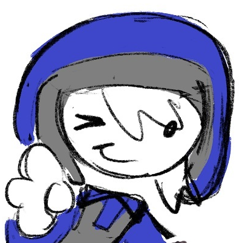

|
Kit is a citizen of Shmorperville and a Prophet of Legacykit.
APPEARANCE Kit is a short, #ffffff white humanoid of indeterminate species. They have medium-length hair that is the same color as their skin, and they wear the security guard outfit from Half Life 1 with the Black Mesa logo switched out for a light green diamond logo. Occasionally, they also brandish a diamond pickaxe. PERSONALITY Kit is best-described as, for the most part, friendly but annoying. They lack a strong sense of fear, believing everyone to be their friend and struggling to realize when people are seriously upset at one another. This is both a virtue and a curse, as -- for better or for worse -- Kit is friends with almost all Shmorperville residents. They don't have a strong sense of reality and often seem disconnected from what is actually happening around them, although they are competent in fights and foraging when the time calls for it. Due to the years they spent alone underground, Kit also has a habit of talking to inanimate objects and animals as well as a general sense of wonder for most facets of the overworld. Occasionally, Kit has moments of unusual awareness where they seem to understand the gravity of their situation. During these lapses, they often seem defeated, upset, or otherwise uncharacteristic from their usual personality. HISTORY The way Kit came into the world isn't clear, but their "birthplace," and the first home they lived in, was a geode connected to a mineshaft. To survive, they would gather large amounts of food, water, and other supplies from faraway Lush Caves, and then spend the rest of their time sleeping, mining, or exploring. Despite this relatively lonely life, Kit was content and never ventured far enough up to see anything on the overworld. They spent many years like this, but eventually became curious about the world outside of their cave system. Because of this, they began to dig a large tunnel, south of their at the time home, in hopes of stumbling onto something new. EARLY SHMORPERVILLE After spending a good week or so digging out a pathway, Kit stumbled into the belly of a small mining operation. Intrigued by the bright light coming from the top of the stairs, Kit wandered out and into the overworld -- where they met Shoe. After a while of helping to aquaint Kit with the new sights and sounds, Shoe began to build a new house in the area. Kit, having nothing else to do and nowhere else to be, offered to help them, and the two of them started to live together for a brief period. Eventually, after the newer building had reached completion, Shoe decided to move back out into their older home. However, despite not living in the same building anymore, the two remain incredibly close friends. THE LEGACYKIT CULT After Kit had settled into Shmorperville, they became very curious about their neighbors. One of their biggest interests was Ivory, who they'd watched lead and later disband the Mud Brick religion. One day, they noticed him slipping under his home, carrying food and candles and all sorts of other oddities. Being the curious creature that they are, Kit trailed him and ended up smack-dab in the middle of a summoning ritual for Legacykit held by Ivory and Jasper. While they'd intended for Ivy to be chosen as his prophet, Legacykit noticed his name similarity to Kit and chose them as a prophet instead, much to his later regret. Jasper and Ivory were very off-put by this, and while Jasper largely accepted it, Ivy remained, and continues to remain, conflicted. Regardless, Legacykit is now tethered to Kit, and it would take nothing short of a miracle to seperate the two. For now, Kit tags along on Legacykit cult missions and serves mostly as a third wheel to annoy Jasper and Ivory. RELATIONSHIPS Legacykit is Kit's God, and they are his chosen prophet. Despite this, Kit often treats Legkit as more of a friend than their all-powerful God. They don't take much that he says very seriously, instead opting to take his ominous comments as misplaced jokes. They often hallucinate him, but they aren't particularly bothered by his presence and always make sure to let everyone know he's there (even when he'd rather remain a silent observer). Legkit is able to possess Kit momentarily, although he lacks the ability to do much other than speak through them. Kit doesn't remember his messages, but they know they do happen. When they're lucid, Kit is a lot more weary of Legacykit. They understand he can't do much harm to them -- if he could, he would've already -- but they still try to keep their distance from him. Legacykit is also a lot more openly threatening towards them during these moments, because he understands it will actually get under their skin. Shoe is Kit's best friend. They often invite them over to their house and they enjoy their presence a lot, even if their personalities are practically polar opposites. Kit finds them to be very cool and mysterious, although they feel bad that they're a bit of a loner and often try to make them friends with Ivory (much to the chagrin of the both of them). Despite this, Kit is generally a good friend and is always happy to hang out with Shoe (despite objections from their fellow Legcult members). During their brief moments of awareness, Kit is often worried for Shoe. They find Eddie to be questionable, but understand that Legacykit is similarly dubious. Because of this, they try to remain supportive despite their reservations. Kit sees Ivory as a close friend, although he would beg to differ. They naturally spend a lot of time with him due to their shared religion, and Kit is always happy to tag along on any missions -- religious or otherwise -- that Ivy wants to embark on. Despite their seeming ignorance of his more.. unhinged beliefs, Kit does get unnerved by Ivy at times, although they lack the emotional intellegence to understand what in specific is bothering them. Despite this, Kit finds him to be a good friend, and they try their best to be one back. During their moments of cognizance, Kit is largely unnerved by Ivy, and even a little afraid of his ability to rally people. Despite this, though, they know that he is disturbed by their sudden tone shifts and they try to utilize it to their advantage when talking to him. Kit is close friends with Jasper. Like with Ivory, Kit often naturally gravitates towards spending time with him due to their shared religion. They very much enjoy building things with him and generally following him around, although they often also suffer the brunt of his aggression when he's annoyed at them. Nevertheless, Kit is happy to be Jasper's friend and will always stick by his side, regardless of his occasional objections. Unlike most other citizens of Shmorperville, Kit's lucid thoughts on Jasper remain mostly the same. They find him to be generally chill and, unlike Ivy, they don't find his cult practices to be too outwardly harmful. Kit, despite their seeming aversion to any sort of negative emotion, tends to be mildly afraid of Ryan. Despite this, they still consider him a good friend and enjoy spending time with him, even if they feel a little more on-edge around him than others. They like helping him build his various businesses, although they struggle with keeping up with any kind of proper job and thus rarely volunteer to work at any of them. Ryan also has a habit of giving Kit surpluses of random items -- especially torches and various gems -- and while Kit greatly appreciates these gifts, they sometimes get overwhelmed by the sheer volume of them all. When they're coherant, Kit's fear of Ryan increases quite a bit, although they still try to remain friendly with him. This is both out of genuine endearment as well as a desire to avoid conflict with him at all costs. Although they're not particularly close, Kit still considers Ruby to be a good friend and partner in mischief-making. They're very open (maybe a bit too open), so they take well to her interviews. Unfortunately, due to Kit's mild detachment from the world, their answers aren't the most accurate as to what is actually happening in reality. Still, they enjoy talking with her and occasionally assisting her in her studying, regardless of how helpful they may actually be. During their moments of lucidity, Kit's opinion on Ruby doesn't change very much. They still find her to be mostly harmless (albeit mildly annoying) and fun to hang out with. Kit often finds themselves in Zoxie's house in order to act as an "assistant" for her, although their purpose would probably be more succinctly described as "lab rat" than anything else. Kit doesn't mind this, though, and they're happy to participate in all of her odd little experiments. Kit tends to look up to Zoxie and sees her as super smart, although their lack of knowledge when it comes to science tends to make their curious comments come across as more rude than they intend them to. While they're cognizant, Kit is somewhat off-put by Zoxie. They often chalk up her more outwardly malicious traits to being an act or personality quirk, but they can't help feeling somewhat unnerved whenever they hang around her for too long. TRIVIA
Back to directory |
KIT 
|